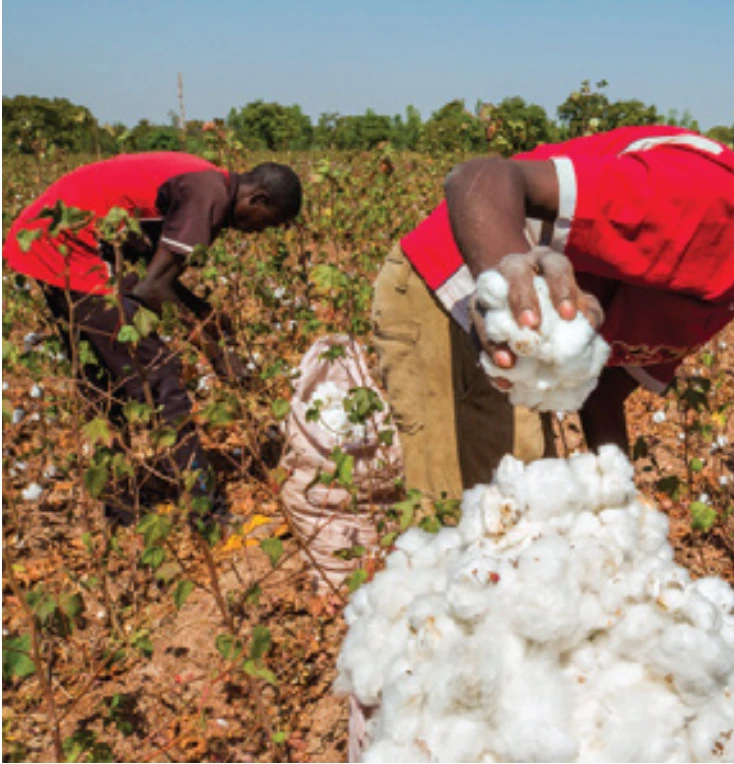
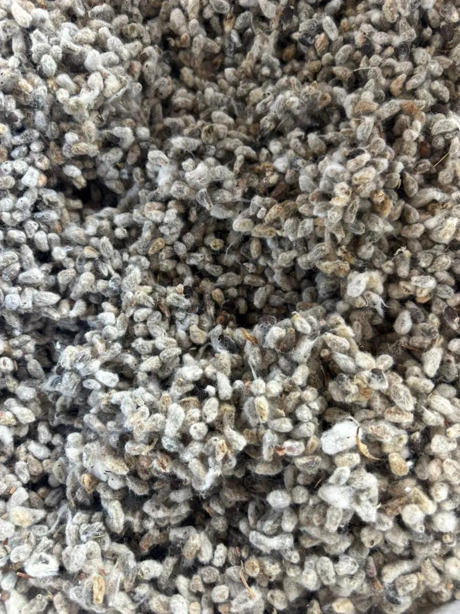
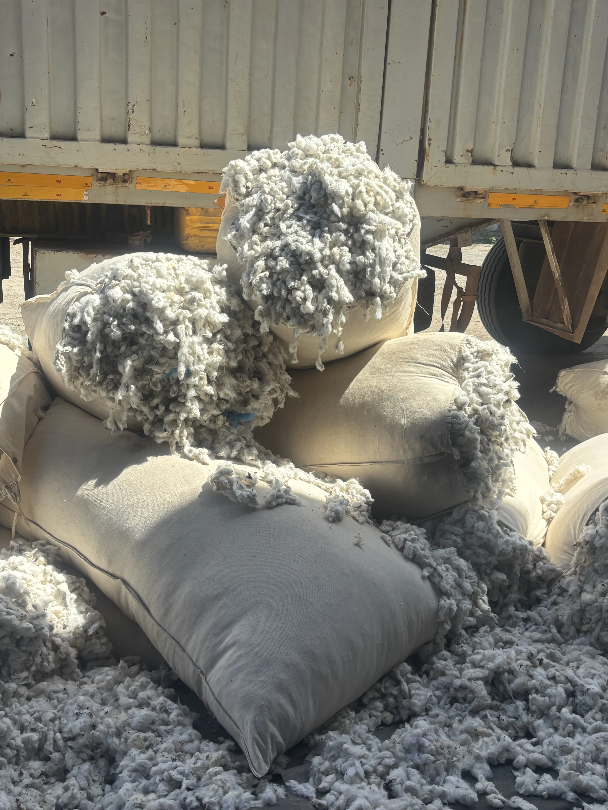
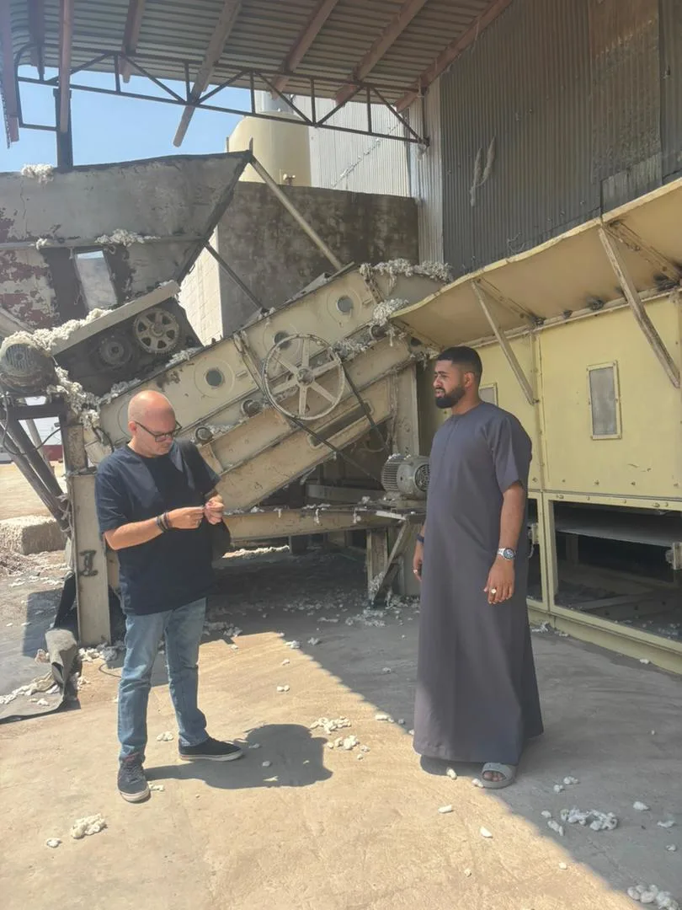
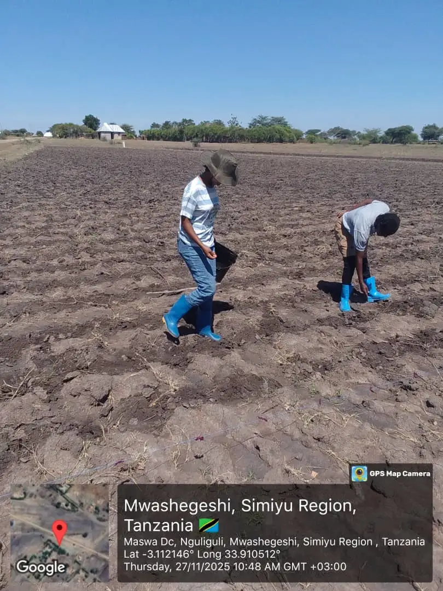

The journey of cotton, from field to fabric, involves a crucial step known as ginning. This process is where the valuable cotton fibers are separated from the seeds. Harvested cotton is fed into specialized ginning machines, where intricate mechanisms gently tease the fluffy fibers away from the seeds. These extracted fibers then undergo a thorough cleaning to remove any remaining impurities. Finally, the cleaned fibers are compressed into tightly packed bales, ready for the next stage of processing. This crucial step ensures that the raw cotton is prepared for its diverse range of applications.
Cotton fiber itself is a remarkably versatile natural resource with a wide range of applications. Its inherent softness, breathability, and durability make it an indispensable material in the textile industry. From everyday clothing like t-shirts and jeans to high-fashion garments, cotton is a staple fiber. Beyond apparel, cotton's versatility extends to home furnishings, where it is used in bedding, upholstery, and towels. Imagine the comfort of cotton sheets or the plushness of a cotton towel – these are just a few examples of cotton's presence in our homes. Its absorbent nature also makes it suitable for medical applications, finding its way into bandages, wound dressings, and other medical supplies. This remarkable combination of properties ensures that cotton remains a valuable and widely used resource across diverse industries, touching our lives in countless ways.
Aham specializes in exporting high-quality cotton lint bales to a diverse range of international markets. We serve as a crucial link between the hardworking farmers of Africa and manufacturers across the globe, spanning continents from Asia and Europe to the Americas. Consider the shirt you're wearing at this very moment – it's entirely possible that the cotton fibers within its fabric were processed in Aham's ginning facility. This interconnectedness highlights the global nature of trade and the significant role Aham plays in the cotton supply chain.

Our dedication to providing superior quality and operational efficiency is evident in our recent investment in a cutting-edge ginning machine. This state-of-the-art technology represents a significant milestone for Aham, bringing numerous benefits. It reduces labor demands, enhances safety protocols for our workers, minimizes waste generation, and promotes environmentally responsible practices. Ultimately, this investment translates to higher yields of premium cotton lint with improved quality and texture. Aham is committed to delivering the finest lint bales at competitive and transparent prices, ensuring value for our customers.
At Aham, we firmly believe in fostering strong relationships with the communities that cultivate the cotton we process. We actively engage with local cotton farmers through comprehensive educational seminars, providing a platform for knowledge sharing and addressing their specific questions and challenges. Our support extends beyond education, as we also assist with essential resources such as medicine for fumigation, helping farmers protect their crops and livelihoods. These long-standing collaborations, built on trust and mutual respect, are the foundation of our success. From the moment the cotton seed is carefully placed in the ground to the precise extraction of the fibers by our advanced machinery, we ensure that every step of the process is meticulously managed. This commitment to quality control, combined with our strong community ties, guarantees a premium product that meets the highest industry standards. Aham: Your trusted partner for sourcing premium African cotton lint, connecting the heart of cotton production with the needs of the world.
Our cotton operations represent the heart of Aham Investment Co. Ltd — a legacy of quality, innovation, and commitment to agricultural excellence. From modern ginning technology to farmer support programmes, every step is designed to create value for our partners and communities.
We have renovated and upgraded our lint manufacturing facility to enhance quality and efficiency. Modern technology reduces manual labour, minimizes human error, and improves workplace safety for our team.
From sourcing raw cotton directly from farmers to ginning, packing and global dispatch, our experienced team ensures precision at every stage of the value chain.
Both cotton lint and seed are carefully graded and packed for delivery. Our processes are designed to uphold quality, consistency and timely fulfilment for every client.
We collaborate closely with the Tanzania Cotton Board (TCB) and participate in the Building a Better Tomorrow (BBT) programme, supporting national efforts to increase cotton production for the benefit of farmers and the wider industry.
Beyond processing, we actively educate farmers on cotton irrigation, crop care and modern agricultural techniques. Through training sessions and on-ground guidance, we help farmers improve yields, reduce losses, and build sustainable livelihoods.




From the heart of Africa’s cotton fields to the fabric of the global market — Aham delivers excellence at every stage. Partner with us to experience sustainable sourcing, premium quality, and trusted expertise that stand the test of time.
Partner with Us